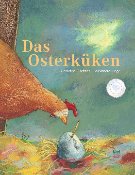

Das Osterküken ist ein bekanntes Symbol für Ostern. Es steht für Frühling
und Neubeginn. Diese Bedeutung passt gut zu Ostern, weil im Frühling viele Tiere,
auch Hühner, ihren Nachwuchs bekommen und alles in der Natur wieder zu wachsen
beginnt. Kinder verbinden es auch mit Ostern, weil Küken klein, flauschig und gelb
sind und gut zum fröhlichen Frühlingsfest passen.
Es gibt auch das bekannte Bilderbuch «Das Osterküken» von Géraldine Elscher und
Alexandra Junge. Dabei geht es um ein Küken, das genau an Ostern schlüpft. Dies stellt
die Bedeutung des Osterküken sehr schön dar.
